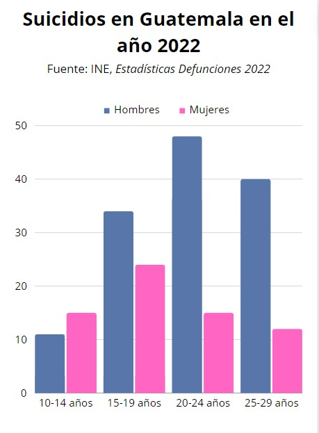

La salud mental es un estado de bienestar mental que permite a las personas hacer frente a los momentos de estrés de la vida, desarrollar todas sus habilidades, poder aprender y trabajar adecuadamente y contribuir a la mejora de su comunidad. Es parte fundamental de la salud y el bienestar que sustenta nuestras capacidades individuales y colectivas para tomar decisiones, establecer relaciones y dar forma al mundo en el que vivimos. La salud mental es, además, un derecho humano fundamental. Y un elemento esencial para el desarrollo personal, comunitario y socioeconómico.
La salud mental y la salud integral están interconectadas. El bienestar emocional influye en las decisiones, relaciones y calidad de vida general. Problemas mentales afectan la energía física y el bienestar social. Cuidar la salud mental proactivamente, mediante la gestión del estrés y hábitos positivos, es esencial para lograr una salud integral y una vida plena.
A lo largo de la vida, múltiples determinantes individuales, sociales y estructurales pueden combinarse para proteger o socavar nuestra salud mental y cambiar nuestra situación respecto a la salud mental, sobretodo en los jóvenes.
Factores psicológicos y biológicos individuales, como las habilidades emocionales, el abuso de sustancias y la genética, pueden hacer que las personas sean más vulnerables a realizar este tipo de actos.
Existen estrategias asequibles, eficaces y viables para promover, proteger y recuperar la salud mental. La necesidad de actuar en relación con la salud mental es indiscutible y urgente. La salud mental tiene un valor intrínseco y fundamental y es parte integral de nuestro bienestar general. La salud mental está determinada por una compleja interacción de factores de estrés y vulnerabilidad individuales, sociales y estructurales.
